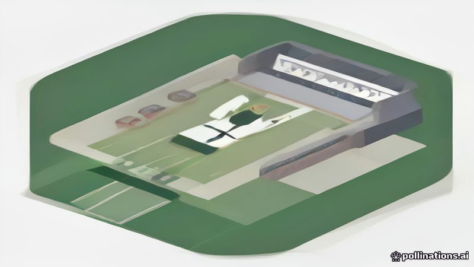

টেনেরিফের ফরোয়ার্ড জেসুস দে মিগুয়েল মাঠে হৃদযন্ত্রের আঘাতের পর মারা গেছেন
DW, Al Jazeera English · 2026-11-03
AI-generated illustrationস্প্যানিশ সেকেন্ড ডিভিশন ম্যাচে গোলকিপারের সাথে সংঘর্ষের ফলে হৃদযন্ত্রের আঘাতের শিকার টেনেরিফের ফরোয়ার্ড জেসুস দে মিগুয়েল মারা গেছেন, ক্লাব শোক প্রকাশ করেছে।
DW এবং Al Jazeera English-এর প্রতিবেদনে বলা হয়েছে, টেনেরিফের ফরোয়ার্ড জেসুস দে মিগুয়েল স্প্যানিশ সেকেন্ড ডিভিশন লিগের একটি ম্যাচে গোলকিপারের সঙ্গে সংঘর্ষের পর হৃদযন্ত্রের আঘাত পেয়ে মারা যান।
ক্লাব জানিয়েছে যে খেলোয়াড়ের মৃত্যু এই মাঠে ঘটিত ঘটনার ফলাফল এবং তারা এই ক্ষতিতে ‘হৃদয় ভেঙে গেছে’ বলে প্রকাশ করেছে।
ঘটনাটি মাঠে ঘটেছে এবং ক্লাবের বিবৃতি এই আকস্মিক ও ট্র্যাজেডিক ঘটনার গুরুত্বকে তুলে ধরেছে। ম্যাচের ফলাফল সম্পর্কে কোনো অতিরিক্ত তথ্য প্রকাশ করা হয়নি।
Written by AI from facts reported by the outlets named above. It may contain errors; check the original reporting.English version
Tenerife Forward Jesus de Miguel Dies After On‑Field Cardiac Arrest
Tenerife forward Jesus de Miguel suffered a cardiac arrest after a collision with the opposing goalkeeper during a Spanish second‑division league fixture, reports from DW and Al Jazeera English state.
The club confirmed that the player died as a result of the on‑field incident and described itself as “heartbroken” by the loss.
The incident occurred on the pitch, and the club’s statement underscored the sudden and tragic nature of the event. No further details about the match outcome were released.